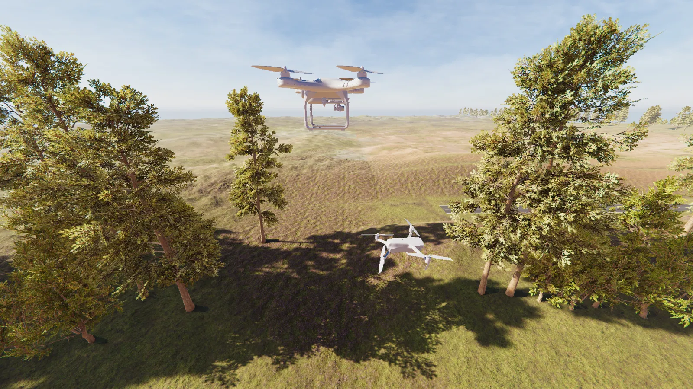
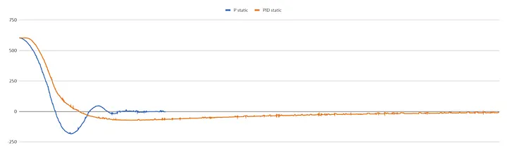
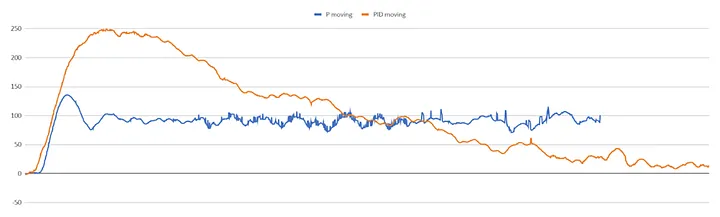
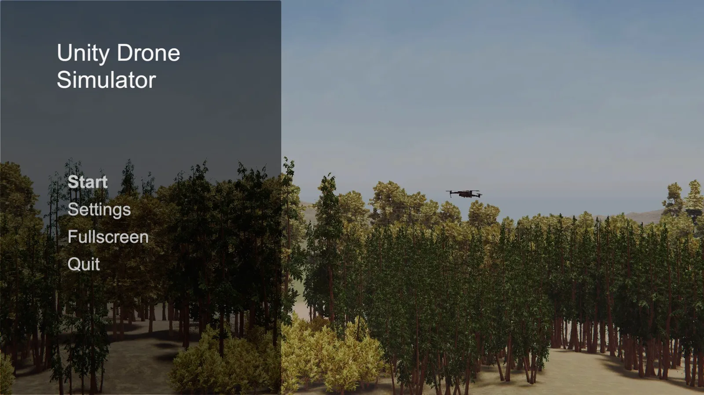
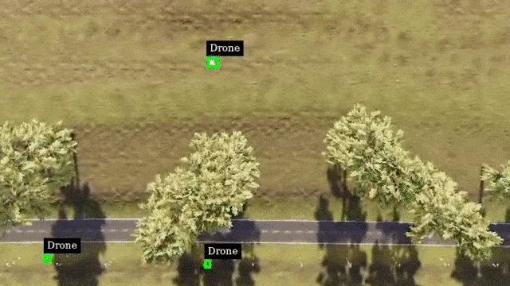
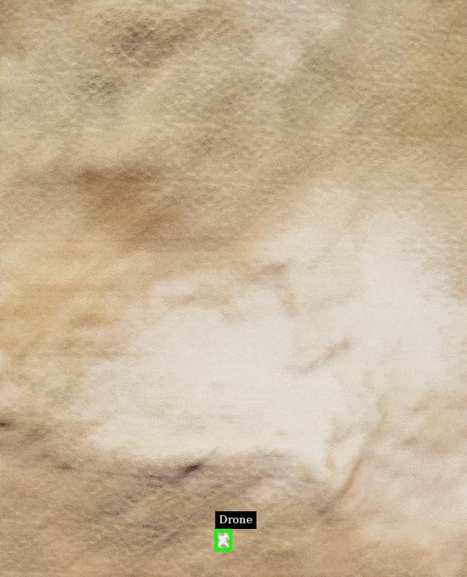

Project · DSTA internship
Unity Drone Simulator
A drone digital twin built in Unity and C#, used as a testbed for a computer vision model and a PID controller script. The simulated camera feed is encoded with FFmpeg and streamed out over RTSP; control inputs come back in over ZeroMQ.

- Eagle altitude
- 55 m
- Separation
- 1–50 m
- Default stream
- 1080p · 30 fps
- RTSP default
- :8554/drone
Why
A testbed for autonomy development
The simulator exists to exercise a vision-and-control loop without flying real hardware. It models the Eagle Concept: an Eagle drone flies above a Target drone with its camera pointing straight down. A computer vision model watches that feed, detects the Target, and a controller script sends commands back to move the Eagle so it keeps following.
The Eagle's height is fixed at 55 m; the separation distance sets the Target's height below it (a 20 m separation puts the Target at 35 m). You fly the Target with WASD, or let a scripted path move it, and watch whether the Eagle keeps up.
Unity's High Definition Render Pipeline is used so the scene looks as close to reality as possible, testing the vision model in near-realistic environments. Some terrain is even deliberately whitened to make a white drone harder to pick out.
Architecture
Video out, commands in
The Unity app is one half of a closed loop. Frames leave as an RTSP stream; velocity commands return over ZeroMQ. The vision model and controller run outside Unity, on the same machine or another one on the network.
-
01 · Capture
A modified FFmpegOut grabs the Eagle camera. An optional delay holds frames in a queue until it exceeds
frameRate × delay / 1000. -
02 · Encode & stream
FFmpeg publishes with
-f rtsp -rtsp_transport udp -muxdelay 0.1. The H.264 NVIDIA preset is recommended for minimal latency at high resolution and frame rate. -
03 · Detect & control
Any RTSP client can read the stream (VLC and FFplay work too). The YOLOv5 model consumes it, and the controller script turns detections into velocity commands.
-
04 · Command
The controller sends
Vx,Vyover ZeroMQ, which mirrors how it talks to the DJI app. Unity scales the values by the Eagle's max speed.
Results
What the simulator surfaced
From the writeup: the sim was used to stress the YOLOv5 perception model and to compare controllers, with the Waypoint method flying the Eagle and the unauthorized (Target) drone through repeatable scenarios.
Perception testing
YOLOv5 sometimes failed to detect the drones correctly, because of busy backgrounds and poor contrast between drone and background.
Waypoint flights near lampposts got them mistaken for drones. A filtering algorithm was added and improved over several rounds, tested against a set of control and treatment scenarios to find the best filter.
Flying white drones over white sand gave the lowest contrast and missed detections. A state motion estimator was tuned in the sim to use trajectory information to guess the drone's position when contrast was low.
Real-time control testing
The sim showed why the choice between a P and a PID controller matters. Plots show the Target's offset from centre, in pixels.


Features
Built for repeatable tests
-
Near-realistic scenes
HDRP terrain, foliage and roads from the Unity Terrain demo and EasyRoads3D, plus sandy textures chosen to make detection harder.
-
Configurable RTSP stream
Port, URL, width, height and frame rate are all set in the menu. The app lists your device's IP addresses so another machine on the network can connect.
-
Latency injection
Add a fixed delay to the video stream or to incoming ZeroMQ commands. An optional on-screen timestamp, burned into the stream, helps measure end-to-end latency.
-
Input Replay with pass/fail
Record the Target's normalised velocity and replay it. A run passes only if the Target stays in the camera frame throughout. "Load All" runs every replay in turn.
-
Waypoints & circling
Readable waypoint files give x, y and speed. The Circle mode orbits the start point with a set radius, speed and direction.
-
Swappable target drone
DJI Mavic and Phantom models are included. Import
.objor glTF models at runtime fromStreamingAssetsand recolour them with a colour picker.
Gallery
In the app



-
Get the app
Clone the repository and open
unity/dronein Unity 2020.3.30f1. Run it in the Editor, or build it yourself. An NVIDIA GPU is recommended for the H.264 NVIDIA preset.git clone https://github.com/thedylone/unity-drone-simulator.git -
Start an RTSP server first
Use the bundled rtsp-simple-server. Its
rtspAddressinrtsp-simple-server.ymlmust match the app's port (default:8554).Warning Starting the stream with no server running crashes the app.
-
Configure settings
In Settings, set the RTSP output path (port + URL) and the ZeroMQ listener path. The listener path must be the controller script's output path.
-
Press Start
The scene loads, and RTSP and ZeroMQ start on their own. The server should show a session publishing to your path.
-
Run the CV model and controller
Point the vision model at the stream. If it runs on another device, check the firewall allows the connection.
rtsp://<ip-address>:8554/droneFly the Target with WASD and the Eagle should follow. Press Esc to open the Input Replay, Waypoint and Circle menus.